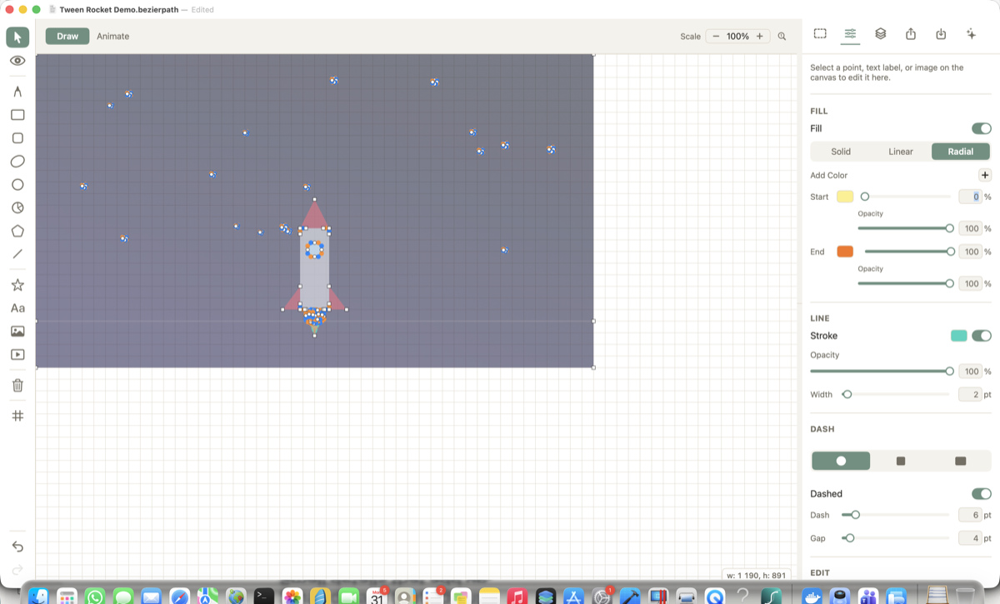
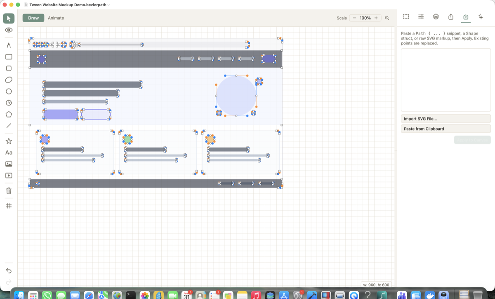
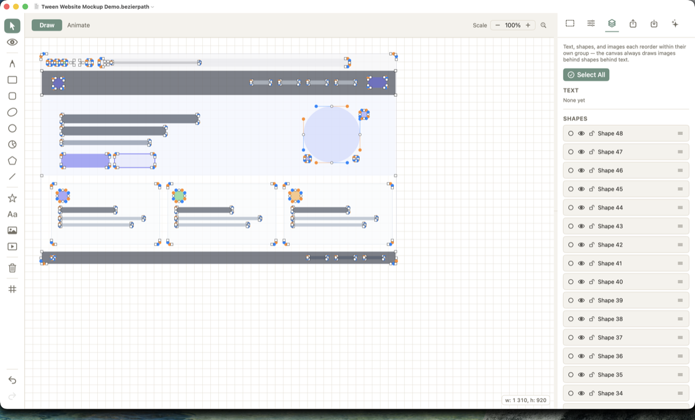
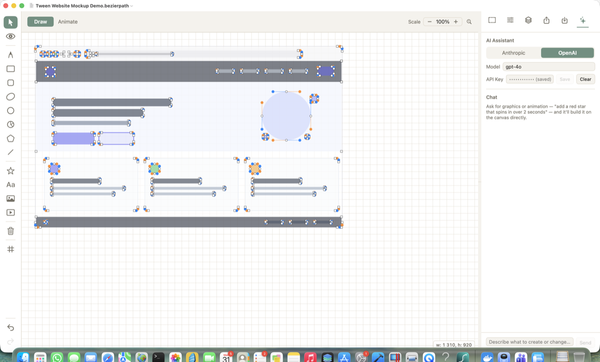
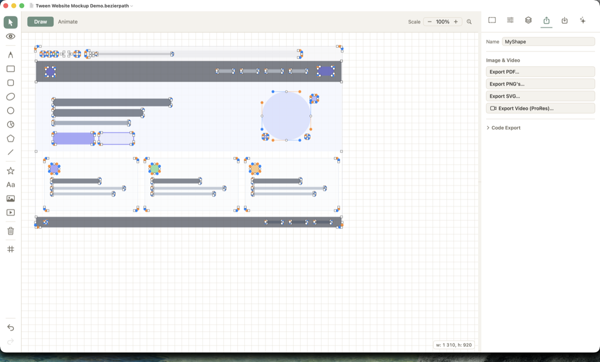

Tips & Tricks
A quick tour of the workflow, plus the shortcuts and small details that aren't obvious the first time you open Tween.
Draw & style
Pick a tool from the left rail — pen, shapes, or Free Draw for a freehand sketch that gets auto-smoothed. Select anything to style it in the Inspector: solid or gradient fills, stroke width, dash, and per-color opacity.

Import or trace something in
Drag an SVG, image, or SF Symbol straight onto the canvas, paste SVG markup, or paste a SwiftUI Path/Shape snippet. Raster images can be traced into real editable vector points.

Organize with Layers
Every shape, text label, and image gets its own row — hide, lock, rename, reorder, or multi-select without leaving the canvas. Shapes, text, and images each stack within their own group.

Ask the AI assistant
Bring your own Anthropic or OpenAI API key (saved to the macOS Keychain), describe what you want — "add a red star that spins in over 2 seconds" — and it builds it directly on the canvas.

Export
PDF, PNG, SVG, or a transparent ProRes video — or open Code Export for a SwiftUI Shape/Path, SVG/HTML/Canvas/React, Android, Compose, or Flutter snippet.

Shortcuts & tricks worth knowing
- S / V / F / P switch tools instantly — Select, View, Free Draw, Pen.
- R / E / L / T drop a Rectangle, Ellipse, Line, or Text label onto the canvas.
- Cmd+Z / Cmd+Shift+Z undo and redo — every edit, including layer reordering and visibility.
- Cmd+A / Delete / Esc select all, delete, or clear the current selection.
- Shift-click a point adds that point's entire shape to your selection, instead of just the one point.
- Cmd+C / Cmd+V copy and paste points, text, or images — paste lands under your mouse.
- Hold Space over the canvas to temporarily pan/view, even mid-draw — let go to snap back to your tool.
- Hold Shift over the canvas to temporarily switch to Select mode without changing tools.
- Arrow keys nudge a selection 1pt; Shift+Arrow nudges it 10pt.
- Arrow keys in a number field step the value by 1 (or 0.1 on a percentage field).
- Shift while dragging a resize handle keeps proportions locked; Option scales from the center instead of the opposite corner.
- Tab / Shift+Tab steps to the next/previous layer from anywhere — not just the Layers tab. Wraps around at either end, so it's a real cycle.
- In the Layers tab, ↑/↓ moves your selection between layers; Shift+↑/↓ selects a range.
- Shapes snap into alignment automatically — to another layer's center, the canvas center, or a nearby anchor.
- Right-click a point, label, image, or layer row for a context menu (smooth/corner, delete, rename…); right-click empty canvas to Select All.
- Pinch or scroll to zoom (20%–500%); the toolbar's 100% button resets it instantly.
- Two-finger double-tap the canvas to smart-zoom in and back out, centered where you tapped.
- Two-finger trackpad twist rotates the current selection directly.
- ⌥⌘0 shows or hides the Inspector; ⌘, opens Settings (Appearance: System/Light/Dark); ⌘/ opens this same shortcuts list right inside the app.
- On the Animate tab, drag a shape's rotation-pivot handle to change what it spins around — right-click it to reset to center.